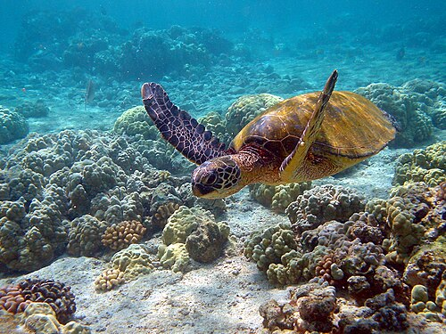

Havssjöldpaddor

Havssköldpaddor (Cheloniidae) är en familj i ordningen sköldpaddor med sex arter. Till skillnad från landsköldpaddor kan havssköldpaddor inte dra in huvudet i skalet. Skalet är strömlinjeformat och benen är omvandlade till simfötter. Havssköldpaddor lägger ägg, och gräver ned dem vid stränder.
landsköldpaddor
Landsköldpaddorna är oftast mindre än sina havslevande släktingar, men det finns även stora arter som galapagossköldpaddorna och aldabrasköldpaddan. En landsköldpadda som är populär att ha som husdjur är rysk stäppsköldpadda. Vissa landsköldpaddor kan leva i mer än 190 år.
Chelonia mydas

Namnet syftar på skalens ovansida som ofta har en färgteckning som varierar från grönaktig till mörkbrun. Undersidan samt fogarna mellan skalens plattor är ljusgula. De flesta individer blir omkring 1,5 meter långa och vikten uppgår maximalt till 185 kg. Man har dock träffat på en individ som var 2,5 meter lång och vägde 800 kg.[1] Själva skalet blir upp till 140 centimeter långt. Skalet är ovalt eller hjärtformigt. Extremiteterna och huvudet har en brun färg.